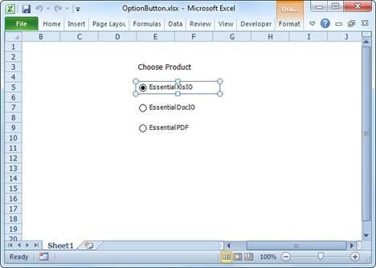

Essential XlsIO now provides support to read/write of Option Button control for XLSX format. This can be achieved by using the IOptionButtonShape interface which is used to add an option button inside a worksheet. The IFill interface is used to customize its appearance. IShapeLineFormat interface is used to modify the border. Various other text alignment properties are also supported.
The following code example illustrates how to read/write an option button control.
|
[C#]
ExcelEngine excelEngine = new ExcelEngine(); IApplication application = excelEngine.Excel; application.DefaultVersion = ExcelVersion.Excel2007; IWorkbook workbook = application.Workbooks.Create(1); IWorksheet sheet = workbook.Worksheets[0];
// Create an Option Button. IOptionButtonShape optionButton1 = sheet.OptionButtons.AddOptionButton(27, 5);
// Assign a value to the Option Button. optionButton1.Text = "American Express";
// Format the control. optionButton1.Fill.FillType = ExcelFillType.SolidColor; optionButton1.Fill.ForeColor = Color.Yellow;
// Change the check state. optionButton1.CheckState = ExcelCheckState.Checked;
// Save and close. workbook.SaveAs("Sample.xlsx"); workbook.Close(); excelEngine.Dispose();
// Load the existing file. excelEngine = new ExcelEngine(); application = excelEngine.Excel; workbook = application.Workbooks.Open("Sample.xlsx", ExcelOpenType.Automatic); sheet = workbook.Worksheets[0];
// Read an Option Button. IOptionButtonShape optionButton2 = sheet.OptionButtons[0]; optionButton2.CheckState = ExcelCheckState.Unchecked;
workbook.SaveAs("Unchecked.xlsx"); workbook.Close(); excelEngine.Dispose(); |
|
[VB.NET]
Dim excelEngine As New ExcelEngine() Dim application As IApplication = excelEngine.Excel application.DefaultVersion = ExcelVersion.Excel2007 Dim workbook As IWorkbook = application.Workbooks.Create(1) Dim sheet As IWorksheet = workbook.Worksheets(0)
' Create an Option Button. Dim optionButton1 As IOptionButtonShape = sheet.OptionButtons.AddOptionButton(27, 5)
' Assign a value to the Option Button. optionButton1.Text = "American Express"
' Format the control. optionButton1.Fill.FillType = ExcelFillType.SolidColor optionButton1.Fill.ForeColor = Color.Yellow
' Change the check state. optionButton1.CheckState = ExcelCheckState.Checked
' Save and close. workbook.SaveAs("Sample.xlsx") workbook.Close() excelEngine.Dispose()
' Load the existing file. excelEngine = New ExcelEngine() application = excelEngine.Excel workbook = application.Workbooks.Open("Sample.xlsx", ExcelOpenType.Automatic) sheet = workbook.Worksheets(0)
' Read an Option Button. Dim optionButton2 As IOptionButtonShape = sheet.OptionButtons(0) optionButton2.CheckState = ExcelCheckState.Unchecked
workbook.SaveAs("Unchecked.xlsx") workbook.Close() excelEngine.Dispose() |

Figure 99: Option Button control added to the Spreadsheet by using Essential XlsIO